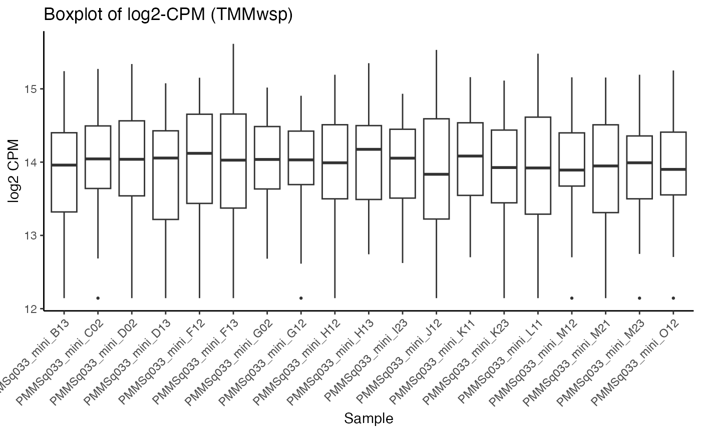
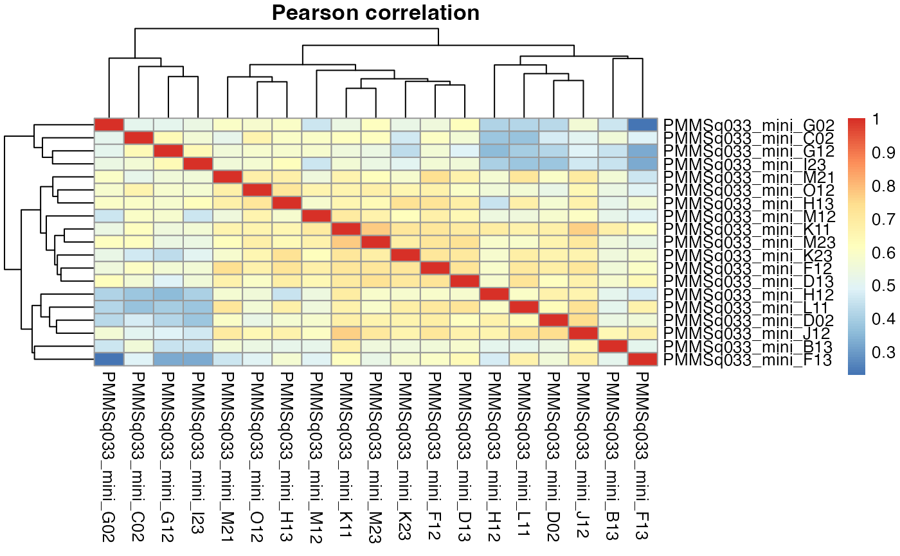
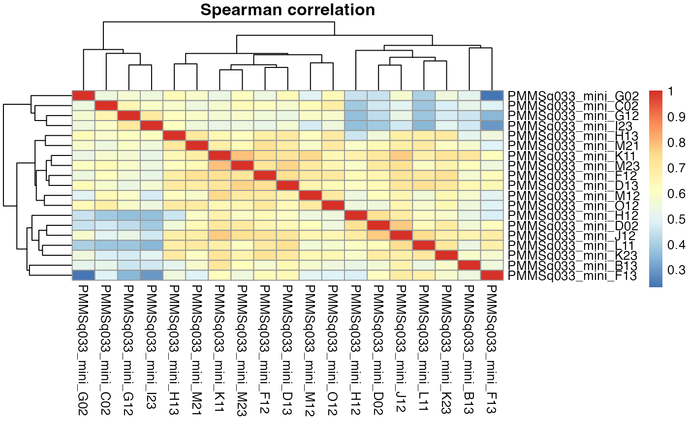

Select high-quality control replicates via TMMwsp log-CPM correlation
Source:R/select_robust_controls.R
select_robust_controls.RdFor a given control group (e.g., DMSO) on a specific plate/batch, this function ranks samples by their average correlation (Fisher z-averaged) to all other samples using edgeR's TMMwsp-normalized log2-CPM. It returns the ranking and (optionally) plots per-sample expression distributions and sample-sample correlation heatmaps.
Usage
select_robust_controls(
data,
samples,
orig_ident,
cpm_filter = 1,
min_samps = 16,
corr_method = c("spearman", "pearson"),
top_n = 5,
make_plots = TRUE
)Arguments
- data
A tidyseurat object containing an RNA assay with a counts layer.
- samples
the control/treatment label to keep in column samples (e.g., "CB_43_EP73_0"). Only cells/samples with this label are considered.
- orig_ident
Character scalar: the plate/batch identifier to keep (e.g., "VH02012942"). Only cells/samples from this batch are considered.
- cpm_filter
Numeric scalar; CPM threshold used for gene filtering prior to normalization (default 1).
- min_samps
Integer; a gene must be expressed (CPM > cpm_filter) in at least this many samples to be retained (default 16).
- corr_method
Correlation type used for ranking; one of c("spearman","pearson") (default "spearman").
- top_n
Integer; the number of top-ranked samples to report in topN. Ties at the cutoff are kept (default 5).
- make_plots
Logical; if TRUE, print a log2-CPM boxplot and Pearson/Spearman correlation heatmaps (default TRUE).
Value
A list with elements:
subset_obj: The Seurat object subset used for analysis.
dge: The filtered edgeR::DGEList
log_cpm_tmm: Matrix of TMMwsp log2-CPM.
boxplot_df: Long-format data frame used for the boxplot (gene, sample, log_cpm).
cor_pearson: Sample-sample Pearson correlation matrix.
cor_spearman: Sample-sample Spearman correlation matrix.
ranking_method: The correlation method used for ranking.
scores_mean_to_others: Named numeric vector of mean Fisher-z back-transformed correlations (higher = better), sorted decreasing.
topN: Named numeric vector of the top-ranked samples (ties at the cutoff kept).
Details
Workflow:
Subset to the specified samples and orig_ident (plate/batch).
Build an edgeR::DGEList, filter lowly expressed genes using CPM and min_samps.
Normalize with TMMwsp and compute log2-CPM.
Rank samples by mean Fisher z transformed correlation to all other samples (according to corr_method).
Return the ranking, correlation matrices, the normalized matrix, and (optionally) plots for QC.
Column names of the counts matrix are rewritten to "<orig.ident>_<Well_ID>" for easier visual inspection in plots.
Examples
data(mini_mac)
res <- select_robust_controls(mini_mac,samples = "DMSO_0", orig_ident = "PMMSq033_mini")


